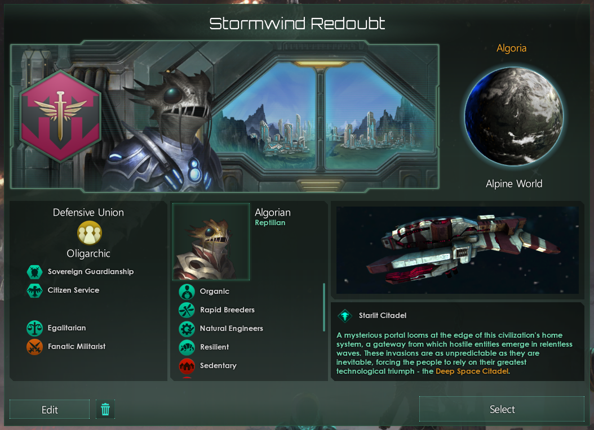
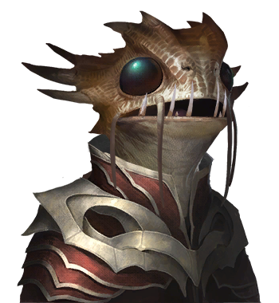

Stormwind Redoubt
Discord Username: Potchama / Sparrow

We pledge our loyalty… to the Stormwind above, and the planet below… from now and forever we shall protect… those of our future against the enemies of the past… by our shield… Algoria and the galaxy… shall live on. —Standard Redoubt military pledge.
History - Starlit Citadel
The Algorians have known war for far too long; not one of conquest, but one of defense, sacrifice, and hope. An eternity have we gazed towards the heavens, but the Demo invasion darkened our skies. What lies ahead of us will not be easy, but guarded by the Stormwind, we shall survive and never lose hope…
Little Algorian history now survives, long have they now adapted to their new fate. It was not long after the Algorians had finished the bulk of their extractive stations did the Demo invasion come. Through the cracked space, scouting ships of unknown biological design spewed forward, cleaning the system and bombarding the Algorian home. Their scrappy stations weathered the force and their first generation war ships relieved the attack. But, it was clear that the time for peace is over, and to secure the future, the fortifications of Algoria must rise. Many gargantuan mountainous fortifications used by the early Algorian nations now house their cities, shielding them from bombardment. Through these factories of war the Algorians rebuffed the invasions of increasing intensity. But it was also within these bastions that a new idea formed: the starlit citadel.
Algorians have a natural aptitude for building strong fortifications, birthed from their fractured nation state era and the imposing mountains. Legends speak of one nation who resisted invasion long ago by an airfleet, its towering cannons protecting its people. The Legend of Algoria and the Stormwind Line, as it is called, to resist the Demo airfleet invasion. It is thus only fitting that during their now dark hour, with little remaining history, that the modern parallels effectuates the now. United under the new Alogiran name, they fight for their survival against the infamous biological ships designated as Demo. The first and grandest of their defenses, a starlit citadel now rechristened as the Stormwind Citadel, shall pave the way to the defeat of their new invaders.
The Stormwind Redoubt, the governmental council charged with the defense of the realm, now seeks to rid the galaxy of the Demo. For security, and their own people.
Government - Oligarchic Defensive Union
The Stormwind Redoubt is the super-national governmental council of the Alogiran people. Although many day-to-day affairs are handled by a separate civil government; the main powers of the state have been subsumed by the Stormwind council. Appointed by their civil government, and charged by the people, the Stormwind council’s directive to the Algorians are clear: security from annihilation. As a federated Defensive Union, the Redoubt serves as the arm military might, and with it, foreign relations as well. The Algorians are well adjusted and well united under the banner of the Stormwind Redoubt.
Civics
: Sovereign Guardianship
From the legends, to the modern threats and way of life, the Stormwind Redoubt and the people of Algoria have always strived to erect their defensive lines. Space is no different. The Redoubt shall entrench their defensive lines to ensure that that Demo invasion, or any invasion, threatens the Algorian existence.
: Citizen Service
The defense and security of the realm is the responsibility of every citizen of the Stormwind Redoubt. Mandatory service has been required ever since the first onslaught of the organic Demo ships. Everyone must contribute to the safety that everyone enjoys; and the Stormwind welcomes any who share the burden.
Extra Civics:
: Heroic Past
The old Legend of Algoria and the Stormwind Line inspired the modern nation of the Stormwind Redoubt, and its stories are still told to the young. Tales of inspiration, sacrifice, and the resolve to do whatever necessary to survive as a nation, and as a species. Fresh recruits often yern to have their names etched metal memorial plates of the Stormwind Citadel for the final act, as so many heroes have.
: Warrior Culture
The people of Algoria have known war and strife since even before the Demo invasion. Accustomed to having to “dig in”, maintain their defenses, and hold the line, the martial prowess to do so is well-baked in society. From mandatory military service to the Redoubt, to a willingness to sacrifice whatever necessary for the people behind the line, Algorians are ready for a fight.
Ethics
: Fanatic Militarist
War, the Algorians are well versed in it. Forced into their military expanse by the Demo fleet, the Algorians know that the way to survive the alien sword is a stronger shield. Little will change that reality, for there are more than the Demo who would prey on the weak.
: Egalitarian
The shock of the invasion from the Demo aliens instilled a sense of unity throughout the (soon to be) Stormwind Redoubt. The turmoil of factions, class, and species paled in comparison to extermination. A semi-equal society, where all contribute to the war effort, grew out of the collective need for security. And, continue it shall to keep the forges alight, to keep the walls study and artillery loaded, to keep the next generation safe.
Species - Algorian

Traits
: Organic
The flesh and blood of the past spilled for the defense of the heart. Yet make no mistake, the Stormwind Redoubt shall not shy those who offer their steel and wires for the safety of tomorrow.
: Rapid Breeders
It has been rather important for the Algorians to make the next generation to make up for those lost to the bombardment from the Demo. Though less true now, the Algorians nevertheless have large families, knowing full well the price that war shall toll.
: Natural Engineers
The large fortifications the vast cities of the Algorians are built within are a testament to their engineering capabilities. This heightened experience allowed them to build the starlit citadels and space stations which guard them today.
: Resilient
The concept of holding the line is well familiar to the Algorians. Their resiliency to keep to the defense is well established. The spirit of the armies which guard the fortifications shall not be easily be destroyed, not while the Stormwind still stands.
: Sedentary
The Algorians dig into life as they do their defenses. With their cities built like forts, ample civilian guards and walls, moving town is no easy feat. Resettlement of the Stormwind populous in any big scale is often prohibitively expensive; and evacuations are seen as an afterthought, as surely, the defenses should protect them.
: Fleeting
Constant battle between those who seek the extermination of the Stormwind provides for short life spans. Though not naturally long-lived either, given the climate they occupy, the ravages to the local gene pool by the bombarding genocides exacerbated their short life spans.
Leadership Directive
The Grand Ward - Mary Reed
Mary Reed was first a commander, now turned official and the current Grand Ward of the Stormwind Redoubt. Named after a major protagonist in the Legend of Algoria, she strives once and for all to rid the burden the Demo inflicts on the Stormwind Redoubt. Born not on Algoria, but instead on the Stormwind Citadel, she learned first hand the spectre of destruction that the Demo inflicts. Steeled, she rose throughout the ranks of the military, gaining enough favor to earn a seat on the Stormwind council, it is now her era. Recently endowed with the authority of the Stormwind, her first tests come soon. The Demo portal flickers once more, and it seems now a true invasion may come.
A Shield of the Past; A Sword of the Future
The main goals of the Stormwind Redoubt are two fold: ensure the border and system integrity of the nation, and seek to eliminate the Demo (ancient hatchery) invasion. To ensure the border, the Stormwind employs mostly defensive tactics. Strong static defenses are usually preferred over dominating fleets; but the fleet of the Stormwind is no slouch either. The main attack fleets of the Stormwind aim for the singular goal of the nation: removal of the Demo threat. The system which they spawn from is often considered a valid birthright prize of the Algorians; and its capture otherwise will draw ire from the Stormwind.
A strong border also means one of geography. The Algorians were keen on using their mountainous geography to their advantage; and so too shall they use the space geography: hyper-lanes. The expansion of the Stormwind nation is a slow process, the people preferring a well defended territory over a large sprawling one. Offensive wars to capture large swaths of territory are uncharacteristic of the Redoubt, but small incursions to better adapt the geography of space may be done.
The Stormwind Redoubt rises to guard against any who aim for their destruction. Biological ships, commonplace of the Demo, will get intense, or even hostile, first impressions, even if from other non-aligned nations. It will be unlikely for a nation using biological ships to be on good terms with the Redoubt. Generally as well, the Stormwind are generally cautious of space fauna. Long range cannons and artillery weaponry is the preferred weapon of the Redoubt.
Failure: The Pyre of the Stormwind
If one thing is for certain, the Stormwind star system shall not fall. For Algorians, the permanent fall of their capital planet at the hands of the Demo or otherwise compels its recapture at whatever cost and whatever time. Even in multi-nation conflicts/crises, the Stormwind Redoubt prioritize their own safety and the integrity of the capital system.
Player Playstyle
As I guide the Stormwind Redoubt through this play through, I aim to invest in the massive static defenses that the Algorians would be used to. A military build up would as well occur, to defend against, and to defeat the Demo / ancient hatchery. Mass investments towards alloys (i.e. the war economy) will transpire, with most of it going into the military. I expect the borders of the Stormwind Redoubt to be small, built and contained within a nice defendable hyper-lane system to the best of my ability. Cautious to other aliens at first, friendly diplomacy requires the “proof” of non-allegiance with the Demo (done via intel gathering, ship set types, and hatchery portal geography) and willingness to respect the borders of the nation. (Of course, the borders will still be heavily fortified.)
If the failure condition has occurred, in this case, the capture of the Stormwind capital, every effort will be expended trying to get it back (within the rules), smart decisions notwithstanding.
Should there be in-game events or diplomatic options which the above lore does not always give a clear answer to the direction that should be taken, direction will be taken from the inspiration of this nation.
Reference / Inspiration
The Stormwind Redoubt and the Algorians were inspired by the Flash game Stormwinds by Hero Interactive. (A trailer can be found on Youtube, https://www.youtube.com/watch?v=NjWxzP9y2Hk.) Additional supportive lore was adapted from the fitting ethics, traits, and civics that a Starlit Citadel nation would take.
Stellaris Code Specification
"Stormwind Redoubt"=
{
key="Stormwind Redoubt"
ship_prefix=
{
key="Turret"
literal=yes
}
species=
{
class="REP"
portrait="rep12"
species_name=
{
key="Algorian"
literal=yes
}
species_plural=
{
key="Algorians"
literal=yes
}
species_adjective=
{
key="%ADJECTIVE%"
variables=
{
{
key="adjective"
value=
{
key="Algorian"
literal=yes
}
}
}
}
name_list="MAM3"
gender=not_set
trait="trait_organic"
trait="trait_rapid_breeders"
trait="trait_natural_engineers"
trait="trait_resilient"
trait="trait_sedentary"
trait="trait_fleeting"
}
name=
{
key="Stormwind Redoubt"
literal=yes
}
adjective=
{
key="%ADJ%"
variables=
{
{
key="adjective"
value=
{
key="Redoubt"
literal=yes
}
}
}
}
authority="auth_oligarchic"
government="gov_defensive_union"
advisor_voice_type="l_the_soldier"
planet_name=
{
key="Algoria"
literal=yes
}
planet_class="pc_alpine"
system_name=
{
key="Stormwind"
literal=yes
}
initializer=""
graphical_culture="reptilian_01"
city_graphical_culture="reptilian_01"
empire_flag=
{
icon=
{
category="zoological"
file="flag_zoological_22.dds"
}
background=
{
category="backgrounds"
file="flag_BG_43.dds"
}
colors=
{
"intense_burgundy"
"shadow_steel"
"orange"
"null"
}
}
ruler=
{
gender=female
name=
{
full_names=
{
key="Mary Reed"
literal=yes
}
}
portrait="rep12"
texture=4
evolution_mask=0
attachment=0
clothes=4
ruler_title=
{
key="Grand Ward"
literal=yes
}
ruler_title_female=
{
key="Grand Ward"
literal=yes
}
trait="leader_trait_principled"
leader_class="official"
}
spawn_as_fallen=no
ignore_portrait_duplication=no
room="cybernetics_room"
spawn_enabled=yes
ethic="ethic_egalitarian"
ethic="ethic_fanatic_militarist"
civics=
{
"civic_sovereign_guardianship"
"civic_citizen_service"
}
origin="origin_starlit_citadel"
}